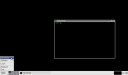
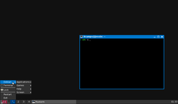
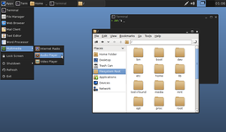
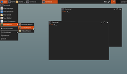

JWM
Dieser Artikel wurde für die folgenden Ubuntu-Versionen getestet:
Ubuntu 16.04 Xenial Xerus
Ubuntu 14.04 Trusty Tahr
Zum Verständnis dieses Artikels sind folgende Seiten hilfreich:
JWM  (Joe's Window Manager) ist ein von Joe Wingbermuehle aktiv in C entwickelter Fenstermanager für den XServer mit Stacking-/Floating-Prinzip. Der Fokus der Entwicklung liegt auf geringer Systemauslastung, was JWM besonders aber nicht nur für leistungsschwächere Systeme interessant macht. Der Fenstermanager präsentiert sich mit übersichtlichem Funktionsumfang, bietet aber neben der ICCCM-konformen Fensterverwaltung samt Unterstützung für MWM und EWMH zeitgemäße Eigenschaften und flexible Einstellungsmöglichkeiten:
(Joe's Window Manager) ist ein von Joe Wingbermuehle aktiv in C entwickelter Fenstermanager für den XServer mit Stacking-/Floating-Prinzip. Der Fokus der Entwicklung liegt auf geringer Systemauslastung, was JWM besonders aber nicht nur für leistungsschwächere Systeme interessant macht. Der Fenstermanager präsentiert sich mit übersichtlichem Funktionsumfang, bietet aber neben der ICCCM-konformen Fensterverwaltung samt Unterstützung für MWM und EWMH zeitgemäße Eigenschaften und flexible Einstellungsmöglichkeiten:
Unterstützung mehrere Monitore
Einrichtung von Fenstergruppen mit individuellen Fenstereigenschaften
Mehrere Arbeitsflächen (mit unterschiedlichen Hintergrundbildern)
Tiling (ab Version 2.3)
Unterstützung von Symbolen und Hintergrundbilder (XPM, JPEG, PNG, SVG)
Unterstützung von TrueType-Schriftarten
Unterstützung beider Schreibrichtungen
Benutzerdefinierte Tastenkürzel
Benutzerdefinierte Farben
Abgerundete Ecken
Eigene Leiste(n) mit:
Anwendungsmenü
Anwendungsstarter
Taskleiste
Arbeitsflächenumschalter
Systray
Uhr
eingebetteten Anwendungen
automatischem Ausblenden
JWM ist freie Software unter MIT-Lizenz .
Installation¶
JWM kann direkt aus den offiziellen Paketquellen installiert werden: [1]
jwm (universe)
 mit apturl
mit apturl
Paketliste zum Kopieren:
sudo apt-get install jwm
sudo aptitude install jwm
Der Fenstermanager kann vor der Anmeldung im Displaymanager ausgewählt oder entsprechend der weiteren Erläuterungen in dem verlinkten Wiki-Artikel beim Start des XServers aufgerufen werden.
Bedienung¶
Wie die meisten Fenstermanager wird auch JWM über Maus und Tastatur gesteuert. Vordefiniert sind standardmäßig allerdings nur wenige Tastenkürzel in der systemweiten Konfigurationsdatei.
Insgesamt kommt die Standardkonfiguration vergleichsweise schlicht daher. Es wird einfach davon ausgegangen, dass sich Anwender die Umgebung nach eigenen Bedürfnissen und Vorstellungen einrichten wollen.
|  |
| Standardkonfiguration (Ubuntu 14.04) |
|  |
| Standardkonfiguration (Ubuntu 16.10) |
|  |
| Angepasste Konfiguration (Ubuntu 14.04) |
|  |
| Angepasste Konfiguration (Ubuntu 16.10) |
Konfiguration¶
Einstellungen werden über eine Konfigurationsdatei nach festem XML-Schema in einem Texteditor vorgenommen [2]:
/etc/jmw/system.jwmrc (systemweit)
~/.jwmrc (benutzerspezifisch)
Die benutzerspezifische Konfiguration überschreibt dabei immer die systemweite und sollte für die Einrichtung bevorzugt werden. Die Datei ~/.jwmrc muss dafür manuell angelegt werden. Eine Beispielkonfiguration ist in der komprimierten Datei /usr/share/doc/example.jwmrc.gz enthalten. Alternativ kann die systemweite Konfigurationsdatei als Vorlage genommen werden [3]:
cp /etc/jmw/system.jwmrc ~/.jwmrc
Weiteres zur Konfiguration findet man im Leitfaden zur Einrichtung und der Dokumentation der Konfiguration auf der offiziellen Projektseite. Zusätzlich existiert eine Manpage.
Änderungen der Konfiguration können im Anwendungsmenü über den Standardeintrag "Restart" direkt übernommen werden.
Hinweis:
Der Link zur „Dokumentation der Konfiguration“ führt immer zur Übersicht für die aktuelle Version von JWM. Da der Fenstermanager aktiv entwickelt wird, können sich die Einstellungsmöglichkeiten verändern. Deswegen sollte man oben auf der Seite die jeweilige Dokumentation für die tatsächlich verwendete Version auswählen. Beispielsweise Dokumentation der Konfiguration Version 2.1 oder Dokumentation der Konfiguration Version 2.2 .
Compositing¶
JWM selbst besitzt keine Compositing-Erweiterung, setzt aber für eine Fenstertransparenz (<Opacity>) eine voraus. In der Dokumentation wird dafür auf Compton als Beispiel für ein solches Zusatzprogramm hingewiesen.
Tiling (ab Ubuntu 16.04)¶
Auch wenn JWM primär das Stacking-/Floating-Prinzip umsetzt, unterstützt der Fenstermanager ab Version 2.3 einfaches Tiling. Dafür können Tastenkürzel mit den internen Befehle maxtop, maxbottom, maxleft und maxright belegt [2] werden. Ab Version 2.3.6 (ab Ubuntu 16.10) kann zusätzlich eine allgemeine Fenstergruppe mit der Eigenschaft aerosnap eingerichtet [2] werden, damit Tiling und Maximieren durch das Ziehen der Fenster an den Bildschirmrand ausgelöst wird.
1 2 3 | <Group> <Option>aerosnap</Option> <Group |
Diese Einstellung ist bereits in der systemweiten Standardkonfiguration unter Ubuntu 16.10 vorhanden.
Tastenkürzel¶
Das Belegen von Tastenkürzeln ist in der Dokumentation weitesgehend erläutert. Die Nummern für die Sondertasten ( Alt , ⇩ num , Super bzw. Windows und Alt Gr ) kann man sich mit folgendem Befehl ausgeben lassen: [3]
xmodmap | grep mod
Die gekürzte Ausgabe könnte wie folgt aussehen:
mod4 Super_L (0x42), Super_R (0x86), Super_L (0xce), Hyper_L (0xcf)
Entsprechend wäre
Super in diesem Fall mod4 und könnte mit mask="4" in der Konfiguration verwendet werden.
Hinweis:
Möchte man zwei Sondertasten (bspw.
Strg +
Super ) verwenden, dann wäre das einfach mask="C4".
- Erstellt mit Inyoka
-
 2004 – 2017 ubuntuusers.de • Einige Rechte vorbehalten
2004 – 2017 ubuntuusers.de • Einige Rechte vorbehalten
Lizenz • Kontakt • Datenschutz • Impressum • Serverstatus -
Serverhousing gespendet von